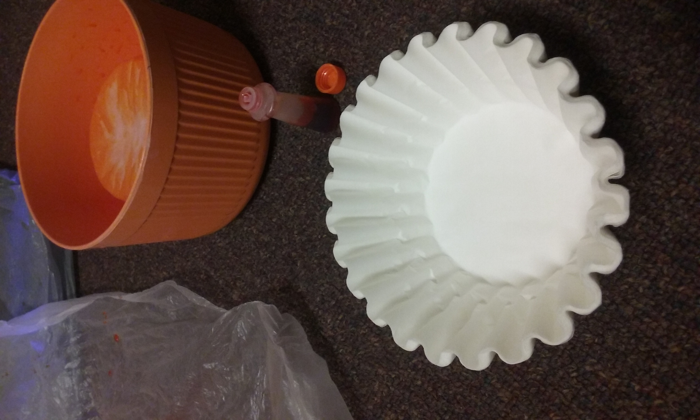

Candy Corn Decoration

What you will need:
- Food Coloring
- yellow and orange
- Coffee Filters
- 2 Bowls
- Cardboard
- Hot Glue Gun
- 2 cups water

Instructions:
- Fill the two bowls with one cup water each
- Add 8 drops of yellow food coloring to one bowl, and 8 drops of orange to the other bowl. Stir until evenly distrubuted.
- Place coffee filters in bowls and then let dry overnight.
- Once dry, scrunch bottom of coffee filters and hot glue it to the cardboard.
- Glue in desired shape and then cut excess cardboard for your very own candy corn decoration.
*Don't have food coloring? Don't worry!
Instead, cut up an old marker to get to the dye in the middle. Just place in the water and you will still get the same effect as food coloring.